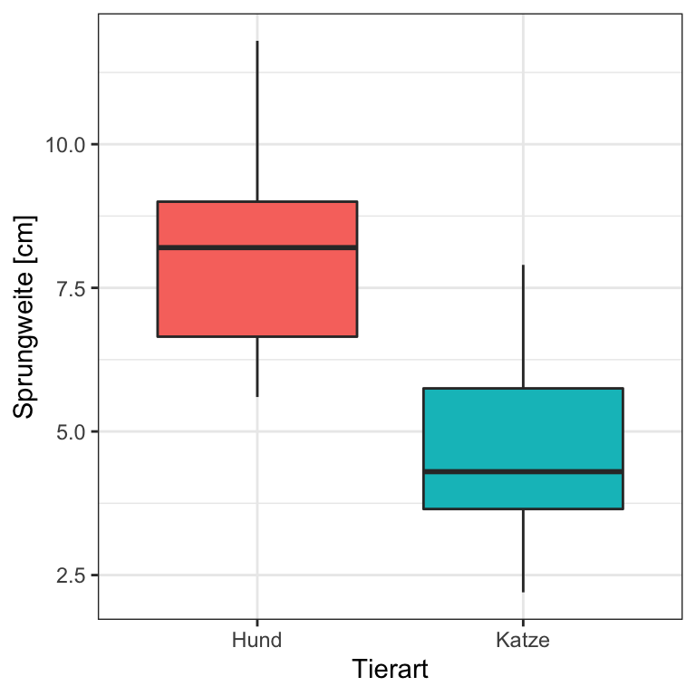
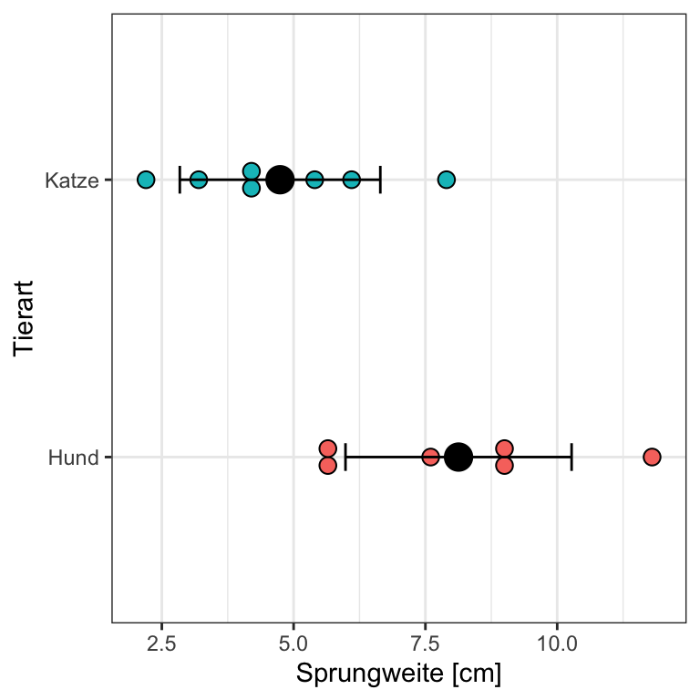
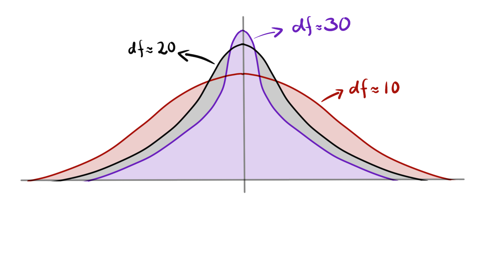

16 Der t-Test
Der t-Test vergleicht die Parameter zweier Normalverteilungen miteinander.
Die Parameter einer Normalverteilung sind der Mittelwert und die Standardabweichung.
\(\mathcal{N}(0, 1)\)
Du findest auf YouTube Der Two Sample t-Test erklärt als Video Reihe. Ich werde zwar alles nochmal hier als Text aufschreiben, aber manchmal ist das Sehen und Hören dann einfacher.
\[ \text{Teststatistik} = \cfrac{\text{Signal}}{\text{Noise}} \]
16.1 Genutzte R Pakete für das Kapitel
Wir wollen folgende R Pakete in diesem Kapitel nutzen.
pacman::p_load(tidyverse, magrittr, broom)Am Ende des Kapitels findest du nochmal den gesamten R Code in einem Rutsch zum selber durchführen oder aber kopieren.
16.2 Die Wichtigkeit des t-Tests
\[ \text{Teststatistik} = \cfrac{\text{Signal}}{\text{Noise}} \]
| animal | jump_length | flea_count | grade | infected |
|---|---|---|---|---|
| dog | 5.7 | 18 | 8 | 0 |
| dog | 8.9 | 22 | 8 | 1 |
| dog | 11.8 | 17 | 6 | 1 |
| dog | 8.2 | 12 | 8 | 0 |
| dog | 5.6 | 23 | 7 | 1 |
| dog | 9.1 | 18 | 7 | 0 |
| dog | 7.6 | 21 | 9 | 0 |
| cat | 3.2 | 12 | 7 | 1 |
| cat | 2.2 | 13 | 5 | 0 |
| cat | 5.4 | 11 | 7 | 0 |
| cat | 4.1 | 12 | 6 | 0 |
| cat | 4.3 | 16 | 6 | 1 |
| cat | 7.9 | 9 | 6 | 0 |
| cat | 6.1 | 7 | 5 | 0 |
Beispieldaten sind in Tabelle tbl-data-ttest abgebildet.

Das ist das Beispiel Abbildung fig-boxplot-ttest

Das ist das Beispiel Abbildung fig-dotplot-ttest
16.3 Student t-Test
\[ T_{calc} = \cfrac{\bar{y}_1-\bar{y}_2}{s_{pooled} \cdot \sqrt{\cfrac{2}{n_{group}}}} \]
Foo

Eigentlich wäre hier folgende Formel richtig…
\[ s_{pooled} = \sqrt{\frac{1}{2} (s^2_{y_1} + s^2_{y_2})} \] …aber auch hier erwischen wir einen Statistikengel um es etwas einfacher zu machen.
\[ s_{pooled} = \cfrac{s_{y_1} + s_{y_2}}{2} \]
\[ s_{pooled} = \cfrac{2.14 + 1.9}{2} = 2.02 \]
\[ T_{calc} = \cfrac{8.13- 4.74}{2.02 \cdot \sqrt{\cfrac{2}{7}}} = 3.14 \]
t.test(jump_length ~ animal,
data = data_tbl, var.equal = TRUE)
Two Sample t-test
data: jump_length by animal
t = 3.12528, df = 12, p-value = 0.0087684
alternative hypothesis: true difference in means between group dog and group cat is not equal to 0
95 percent confidence interval:
1.0253394 5.7460892
sample estimates:
mean in group dog mean in group cat
8.1285714 4.7428571 t.test(jump_length ~ animal,
data = data_tbl, var.equal = TRUE) %>%
tidy() # A tibble: 1 × 10
estimate estimate1 estimate2 statistic p.value parameter conf.low conf.high
<dbl> <dbl> <dbl> <dbl> <dbl> <dbl> <dbl> <dbl>
1 3.39 8.13 4.74 3.13 0.00877 12 1.03 5.75
# … with 2 more variables: method <chr>, alternative <chr>16.4 Welch t-Test
\[ T_{calc} = \cfrac{\bar{y_1} - \bar{y_2}}{\sqrt{\cfrac{s^2_{y_1}}{n} + \cfrac{s^2_{y_2}}{m}}} \]
Hier muss man noch bedenken, dass die Freiheitsgrade anders berechnte werden Die Freiheitsgrade werden mit1
1 \[df = \cfrac{\left(\cfrac{s^2_{y_1}}{n} + \cfrac{s^2_{y_2}}{m}\right)^2}{\cfrac{\left(\cfrac{s^2_{y_1}}{n}\right)^2}{n-1} + \cfrac{\left(\cfrac{s^2_{y_2}}{m}\right)^2}{m-1}}\]
t.test(jump_length ~ animal,
data = data_tbl, var.equal = FALSE)
Welch Two Sample t-test
data: jump_length by animal
t = 3.12528, df = 11.8307, p-value = 0.008906
alternative hypothesis: true difference in means between group dog and group cat is not equal to 0
95 percent confidence interval:
1.0215869 5.7498416
sample estimates:
mean in group dog mean in group cat
8.1285714 4.7428571 t.test(jump_length ~ animal,
data = data_tbl, var.equal = FALSE) %>%
tidy() # A tibble: 1 × 10
estimate estimate1 estimate2 statistic p.value parameter conf.low conf.high
<dbl> <dbl> <dbl> <dbl> <dbl> <dbl> <dbl> <dbl>
1 3.39 8.13 4.74 3.13 0.00891 11.8 1.02 5.75
# … with 2 more variables: method <chr>, alternative <chr>16.5 Verbundener t-Test (Paired t-Test)
\[ T_{calc} = \sqrt{n}\cfrac{\bar{d}}{s_d} \]
t.test(jump_length ~ animal,
data = data_tbl, paired = TRUE)
Paired t-test
data: jump_length by animal
t = 3.76033, df = 6, p-value = 0.0093949
alternative hypothesis: true mean difference is not equal to 0
95 percent confidence interval:
1.1825691 5.5888595
sample estimates:
mean difference
3.3857143 t.test(jump_length ~ animal,
data = data_tbl, paired = TRUE) %>%
tidy() # A tibble: 1 × 8
estimate statistic p.value parameter conf.low conf.high method alternative
<dbl> <dbl> <dbl> <dbl> <dbl> <dbl> <chr> <chr>
1 3.39 3.76 0.00939 6 1.18 5.59 Paired t-… two.sided 16.6 Rest Formeln
\[\begin{align*} T_{calc} &= \cfrac{7.24 - 9.71}{6.45 \cdot \sqrt{\frac{2}{7.5}}} \\ &= \cfrac{-2.47}{6.45 \cdot 0.52} \\ &= \cfrac{-2.47}{3.354} = -0.73 \end{align*}\] \[\begin{align*} H_0: \bar{y}_{dog} &= \bar{y}_{cat} \\ H_A: \bar{y}_{dog} &\neq \bar{y}_{cat} \\ \end{align*}\]16.7 Freiheitsgrade im t-Test
